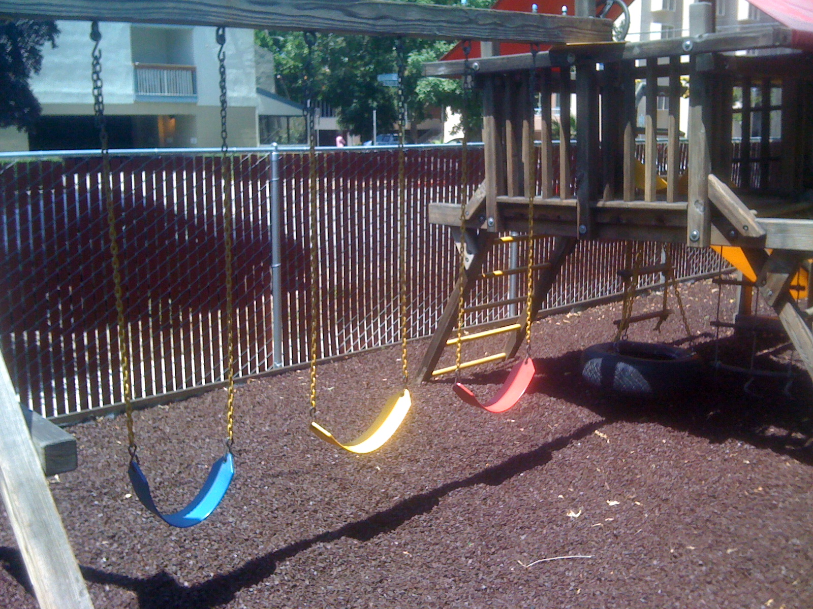
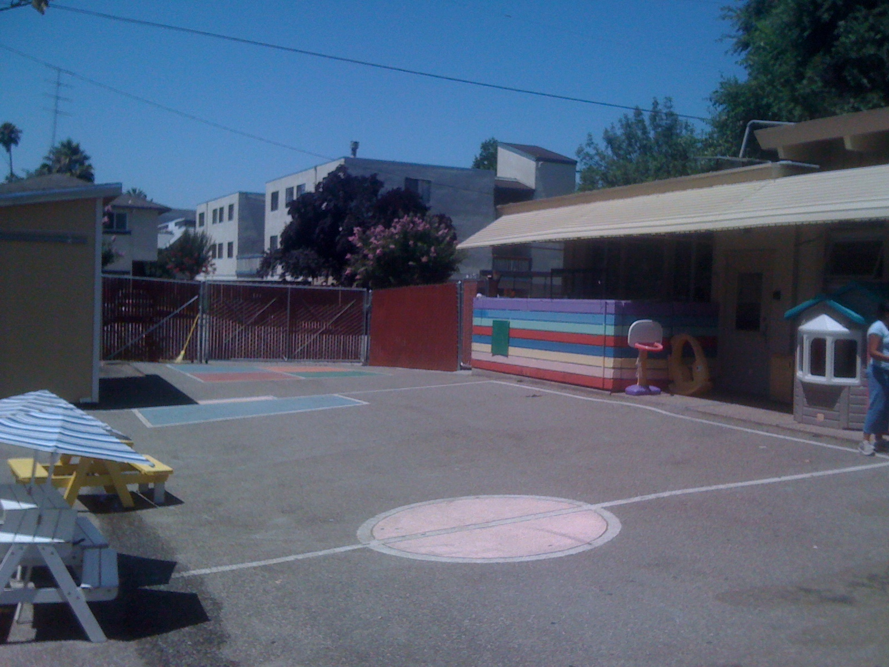
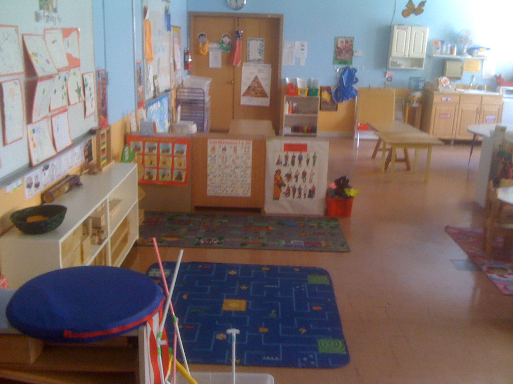
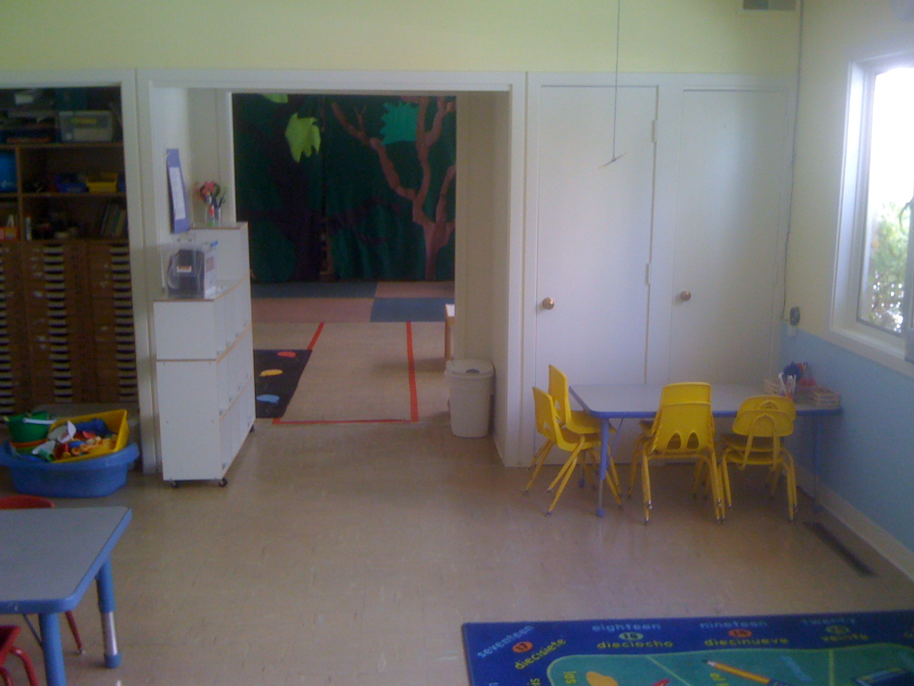

QUIÉNES SOMOS
Nuestra Escuelita es un preescolar con participación de padres, independiente, privado, sin fines de lucro y sin vinculación religiosa.
* Historia
Nuestra Escuelita fue fundada en el año 2001 por un grupo de padres hispanohablantes que deseaban que sus hijos siguieran desarrollando el idioma español.
Nuestra Escuelita opera como un preescolar en el cual todos los padres contribuyen con su tiempo en diferentes áreas.
* Misión
Ayudar a los niños hispanohablantes a continuar su desarrollo del idioma español y prepararlos para que tengan éxito en el nivel preescolar.
Nuestro programa se propone:
1. lograr el pleno desarrollo social, físico, intelectual, lingüístico y afectivo de los niños.
2. lograr que los niños se conviertan en aprendices entusiastas, independientes, seguros de sí mismos, y que aprendan a trabajar con los demás.
3. lograr una comunidad de familias hispanohablantes en la que todos (niños y adultos) jueguen, aprendan, se apoyen y convivan.
* Filosofía Educativa
Nuestra Escuelita reconoce que los padres son los primeros maestros de sus niños y que tienen un papel de suma importancia en su desarrollo. Nuestra Escuelita es una extensión y complemento de la educación que los niños ya reciben en sus hogares.
Los alumnos aprenden a través del juego, la exploración, la discusión y el descubrimiento. La maestra y los asistentes presentan nuevos conceptos por medio de "temas del mes", integrados con nociones de matemáticas, ciencias, lectura y escritura. Para lograr nuestros objetivos utilizamos una variedad de currículos, una amplia selección de música infantil y juegos culturales.
PARTICIPACIÓN DE LOS PADRES
Nuestra Escuelita es un preescolar de participación de padres. Es independiente, privado, sin fines de lucro y sin vinculación religiosa. Los padres tienen la responsabilidad de dirigir las finanzas, desarrollar y apoyar el currículum, y mantener y limpiar las instalaciones. Para cumplir con nuestras responsabilidades, un miembro de cada familia debe:
Preescolar:
1. Ser asistente en el salón un mínimo de 2 veces al mes (a menas que se pague la colegiatura más alta para no ser asistente).
2. Asistir a la orientación al principio del año y a todas las reuniones obligatorias.
3. Participar activamente en un comité. Los comités se reúnen mensualmente y trabajan en diferentes proyectos.
4. Participar en las recaudaciones de fondos, planeadas para el mantenimiento y crecimiento de nuestra comunidad.
5. Prestar 10 horas de servicio, como mínimo, al año para mantener la escuela limpia y para otros proyectos especiales.
Jardín:
1. Asistir a la orientación al principio del año.
2. Prestar 6 horas de servicio, como mínimo, al año para mantener la escuela limpia y para otros proyectos especiales.
Los padres del programa de Jardín (de 0 a 3 años) están invitados a todas las actividades y pueden participar en las jornadas y proyectos de la comunidad.
INSTALACIONES
Nuestra Escuelita cuenta con dos grandes aulas, un patio de recreo que incluye un área cerrada con estructuras de juegos(columpios, tobogán, etc.) y un gimnansio; y fuera del recinto, un grupo de plazas de estacionamiento.
|  |  |
|  |  |
PREGUNTAS FRECUENTES
1. ¿Cuándo puedo hacer un tour por Nuestra Escuelita?
Para hacer un tour por Nuestra Escuelita, usted debe enviar un correo electrónico a info@nuestraescuelita.org solicitando la visita, con su nombre, edad y nombre de su hijo, día y hora de preferencia de su visita y su número telefónico de contacto.
2. ¿Cuándo puedo matricular a mi hijo?
Las matrículas se pueden hacer durante el año lectivo basado en la disponibilidad de la clase que usted requiera. La edad para ingresar a la clase de bebés es de 0 a 2 años; la del jardín, 2 a 3 años; y la del preescolar, 3 a 5 años. Las clases de avanzados son de 6 a 8 años.
3. ¿Cómo es el proceso de matrícula?
Después de visitar nuestra página web o hablar con un representante de Nuestra Escuelita, le invitamos a hacer un tour por Nuestra Escuelita para que conozca nuestras instalaciones y asista a una de las clases que ofrecemos. Luego, puede visitar nuestra página web y bajar la solicitud; la cual debe completarse y enviarse por correo junto con un cheque de $25 a nombre de Nuestra Escuelita. Este cheque no es reembolsable. Después de revisar la solicitud, un representante de Nuestra Escuelita se comunicará con usted en el término de 24 horas después de revisar la solicitud. Al final, tras revisar la disponibilidad de la clase solicitada, se le hará llegar un paquete con algunos requisitos y documentos que debe entregar en su primer día de clase.
4. ¿Cómo es la participación de los padres de familia en Nuestra Escuelita?
Nuestra Escuelita es un preescolar con participación de padres. Es independiente, privado, sin fines de lucro y sin vinculación religiosa. Los padres tienen la responsabilidad de llevar las finanzas, desarrollar y apoyar el currículum, y mantener y limpiar las instalaciones.
5. ¿Cómo es la participación de los padres de familia en el Jardín (0-3 años)?
Los padres de familia del Jardín no participan directamente en las responsabilidades de Nuestra Escuelita, pero siempre están invitados a participar en todas las actividades que necesiten de su ayuda.
6. ¿Es el español el único idioma que se habla dentro de las instalaciones de Nuestra Escuelita?
Sí, tratamos que nuestros estudiantes y la comunidad de Nuestra Escuelita hablen sólo español dentro de los salones de clases y de nuestras instalaciones para no perder la práctica y el uso del español.
7. ¿Nuestra Escuelita es un preescolar con alguna orientación religiosa?
No, Nuestra Escuelita es un preescolar independiente, privado, sin fines de lucro y sin vinculación religiosa.
8. ¿Debo asistir con mi hijo a todas sus clases?
Si su hijo asiste a las clases del Jardín (0-3 años), sí debe asistir con su hijo a todas las clases. Si su hijo asiste a alguna de las clases del preescolar (3-5 años, ya sea en el grupo de los Pequeños o de los Grandes) no debe asistir a todas las clases con su hijo.
9. ¿Cómo es la participación de los padres de familia en el preescolar (3-5 años)?
La participación de los padres en el preescolar es de vital importancia para el funcionamiento, desarrollo y metas de Nuestra Escuelita. Las responsabilidades de los padres son:
- Ser asistente en el salón, como mmínimo 2 veces al mes.
- Asistir a la orientación al principio del año y a todas las reuniones obligatorias.
- Participar activamente en un comité. Los comités se reúnen mensualmente y trabajan en diferentes proyectos.
- Participar en las recaudaciones de fondos, planeadas para el mantenimiento y crecimiento de nuestra comunidad.
- Prestar como mínimo 10 horas de servicio al año para mantener la escuela limpia y para otros proyectos especiales.
NOTA: Los padres del programa de Jardín (0 a 3 años) no tienen la obligación de participar; pero están invitados a todas las actividades y pueden participar en las jornadas y proyectos de la comunidad.
10. ¿Debo hablar español si asisto como acompañante de mi hijo al Jardín (0-3 años)?
Sí, el padre de familia o la persona que asiste con su hijo deben hablar español.
11. ¿Es requisito que el asistente de la maestra en las clases de preescolar (3-5 años) hable Español?
Sí, todas las personas que son asistentes de la maestra en las clases del preescolar tienen que hablar español.
12. ¿Cuál es el cupo máximo de las clases?
El cupo en las clases del Jardín (0-3 años) es de 11 estudiantes. En el preescolar (3-5 años) es de 16 estudiantes.
13. ¿Es posible que Nuestra Escuelita me otorgue una beca para mi hijo?
Sí, Nuestra Escuelita otorga becas para las familias de escasos recursos económicos previo cumplimiento de algunos prerequisitos y posterior estudio de la mesa directiva de nuestro plantel educativo.
14. ¿Mi hijo debe estar entrenado para ir al baño para asistir a Nuestra Escuelita?
No, su hijo no debe estar entrenado para ir baño para asistir a Nuestra Escuelita.
15. ¿Cuál es el calendario escolar de Nuestra Escuelita?
Para leer el Calendario del Ciclo Lectivo completo haga click en este enlace: Calendario
16. ¿Cuál es el plazo máximo para cancelar la colegiatura mensual?
La colegiatura se debe cancelar dentro de los cinco primeros días hábiles de cada mes. Después de esto se cobra una penalización.
17. ¿Cuál es la dirección y teléfono de contacto de Nuestra Escuelita?
405 South 10th Street
San José, California 95112
Tel. (408) 471-8756

Información General

Nuestra Escuelita admits students of any race, color, national and ethnic origin to all the rights, privileges, programs, and activities generally accorded or made available to students of the school. It does not discriminate on the basis of race, color, national or ethnic origin in administration of its educational policies, admissions policies, scholarship and loan programs, and athletic and other school administered programs.
Copyright © 2012 Nuestra Escuelita